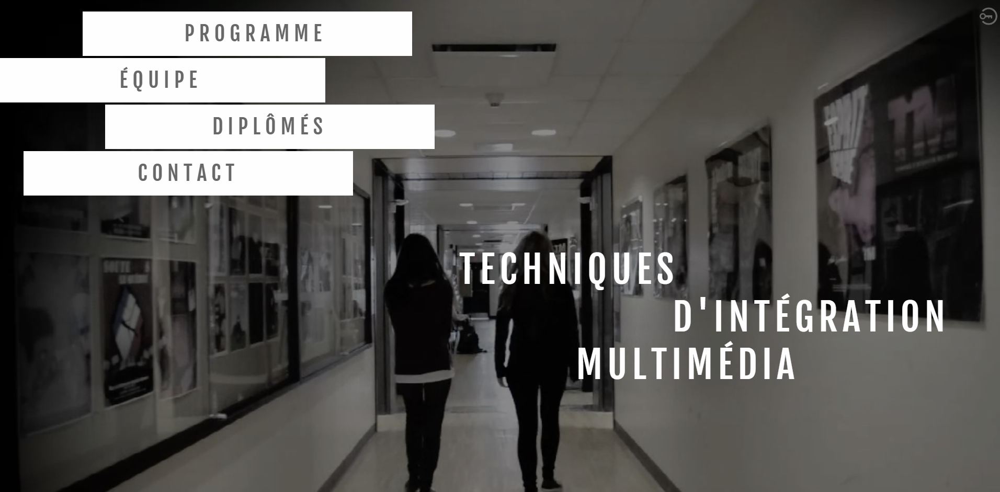

Page d'Accueil du site web avec un vidéo en arrière-plan réalisé pour: Techniques d’intégration multimédia du collège de Maisonneuve. Réalisation en équipe - Roxanne Corbeille, Kathleen Blackburn et Kym HoganMatte painting - Réalisation en PhotoshopVoir déconstruction ci-dessous.